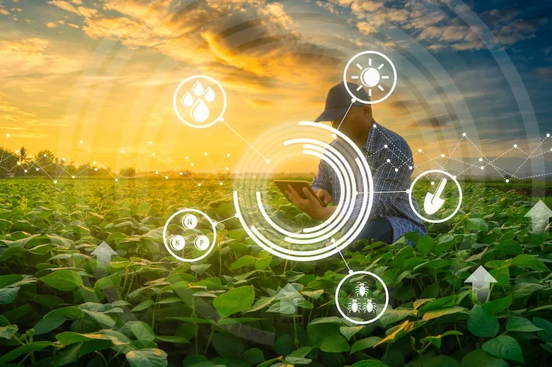

A tecnologia é uma ferramenta de grande ajuda no nosso dia a dia, sendo cada vez mais utilizada em momentos cotidianos. Podemos perceber isso
na utilização das redes sociais, por exemplo, que é algo muito frequênte. Porém a tecnologia está presente em coisas que, muitas vezes, nem
percemos.
